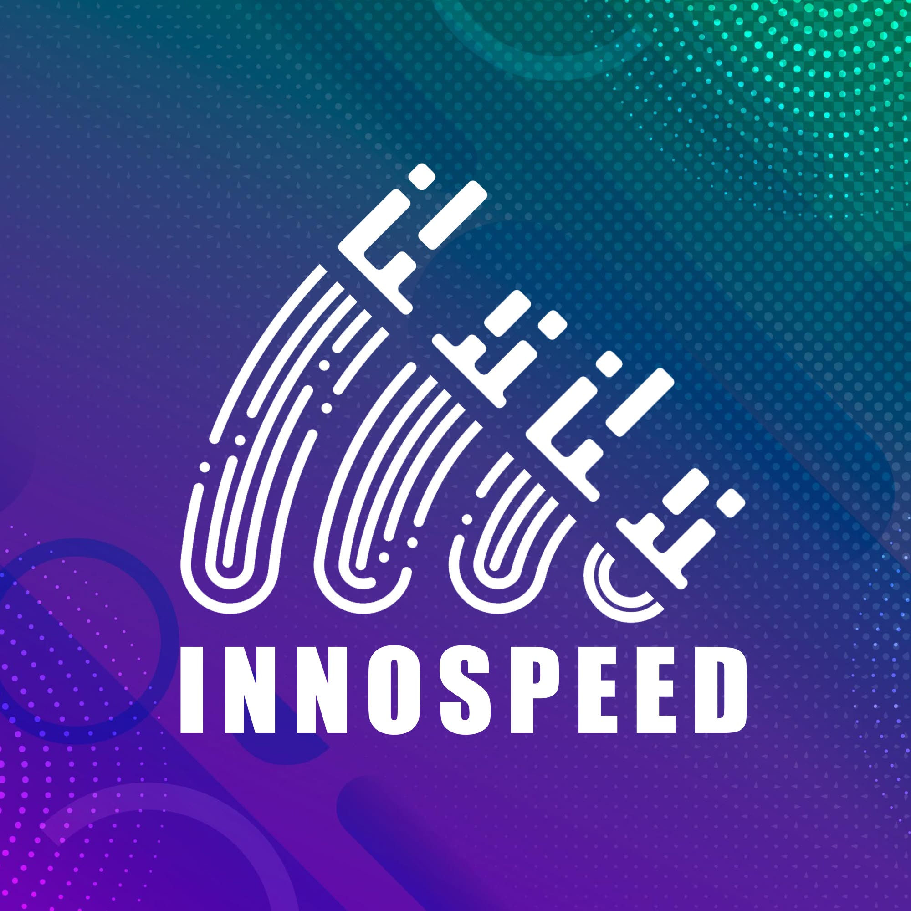

EVENT
INNOSPEED 1.0
INNOSPEED 1.0 WAS A GROUNDBREAKING ROBOTICS AND AI HACKATHON, BRINGING TOGETHER TALENTED STUDENTS TO COLLABORATE ON CUTTING-EDGE TECHNOLOGICAL SOLUTIONS. AS THE FIRST EDITION OF THE SERIES, IT SET THE FOUNDATION FOR AN INNOVATIVE AND COMPETITIVE ENVIRONMENT WHERE PARTICIPANTS TACKLED REAL-WORLD CHALLENGES USING ROBOTICS, ARTIFICIAL INTELLIGENCE, AND IOT.